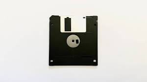

El disquete o disco flexible (en inglés: diskette o floppy disk)
fue un soporte de almacenamiento de datos de tipo magnético, formado por una fina
lámina circular (disco) de material magnetizable y flexible (de ahí su denominación),
encerrada en una cubierta de plástico, cuadrada o rectangular, que se utilizaba en la computadora.